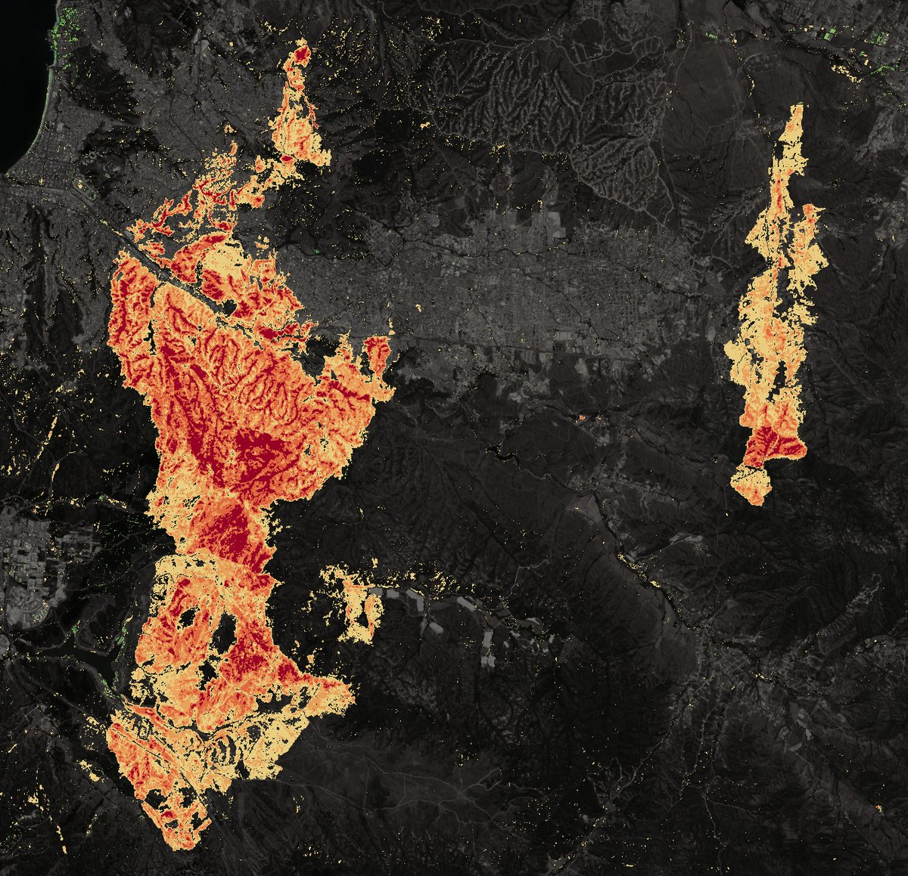

Cada método es un caso con sus propias fuentes y límites. Esta página los pone lado a lado y no saca conclusiones que ninguno de los tres midió.
1 · Severidad · Sentinel-2
Cuánto se quemó
9.211,9 ha
quemadas, calibrado localmente con Copernicus EMSR715. Intervalo del 95 %, 8.634,5 a 9.582,1 ha.
- Baja
- Moderada baja
- Moderada alta
- Alta

2 · Daño a edificaciones · Sentinel-1
Qué edificaciones se dañaron
79,4 %
de las edificaciones con daño según Copernicus EMS mostraron un cambio en el radar (intervalo del 95 %, 59,9 % a 89,7 %). El óptico solo ve 53,0 %; con los dos se llega a 88,7 %.
Daño probable, no confirmado. Resultados por zona, no por vivienda. Copernicus EMS, SENAPRED y MINVU no validaron estos resultados.

3 · Capacidad de respuesta · región de Valparaíso
A qué tiempo de viaje quedan los bomberos
2,8 %
de la población de la región, 52.065 personas, vive a más de 15 minutos de viaje de una compañía de bomberos. En las zonas donde la quema se repitió entre 2013 y 2025 es 2,5 %. En esta región no sube; en el conjunto de las siete regiones pasa de 3,5 % a 10,7 %.
Es tiempo de viaje modelado, no tiempo de respuesta. En Viña del Mar, la capa oficial de 2017 tiene 8 compañías y OpenStreetMap registra otras 6 que no están en ella. Bomberos, MINSAL y SENAPRED no validaron estos resultados.

Lo que esta ficha no dice
- No relaciona los tres resultados entre sí. Los casos no se diseñaron juntos y usan áreas, fechas y unidades distintas: hectáreas quemadas, edificaciones y personas.
- No cuenta personas damnificadas, viviendas perdidas ni víctimas. Esas cifras son de los organismos oficiales y no se reproducen aquí.
- No evalúa la respuesta de bomberos, brigadistas ni voluntarios durante el incendio. El tiempo de viaje es un modelo de la red de calles, sin aviso, despacho ni condiciones del día.
- Cada caso tiene sus límites completos en su página o en su repositorio.
Avisos y atribuciones
- Contiene datos modificados de Copernicus Sentinel (2024). Copernicus EMS: EMSR715 y EMSN188 (© 2024 European Union).
- Población: INE, Censo de Población y Vivienda 2024 (CC BY-SA 4.0). Quemas: MapBiomas Chile, Fuego Colección 1. Compañías de bomberos: IDE Chile (2017, CC BY).
- Contiene información de OpenStreetMap, disponible bajo la Open Database License (ODbL).